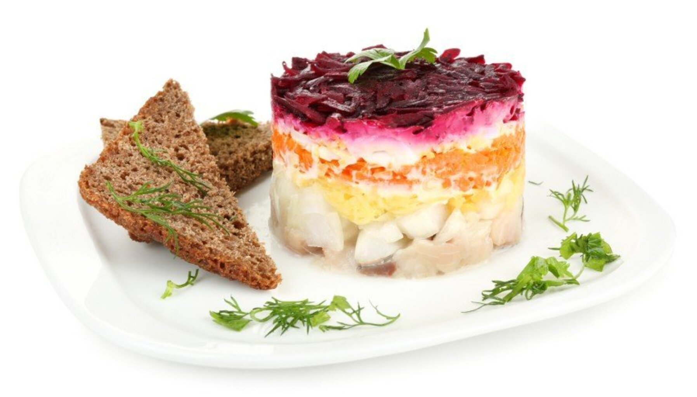

Ingredients
- Salted herring – 1 fillet
- Boiled potatoes – 2 pcs
- Boiled carrots – 2 pcs
- Boiled beets – 2 pcs
- Boiled eggs – 2 pcs
- Mayonnaise – to taste
Instructions
- Layer grated potatoes, herring, carrots, eggs, and beets.
- Spread mayonnaise between layers.
- Refrigerate for a few hours before serving.